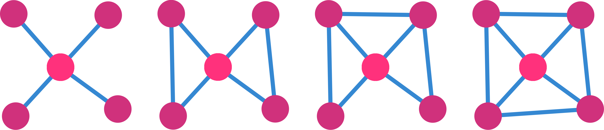
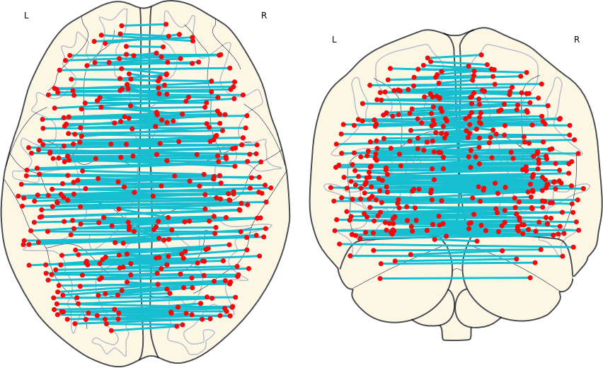
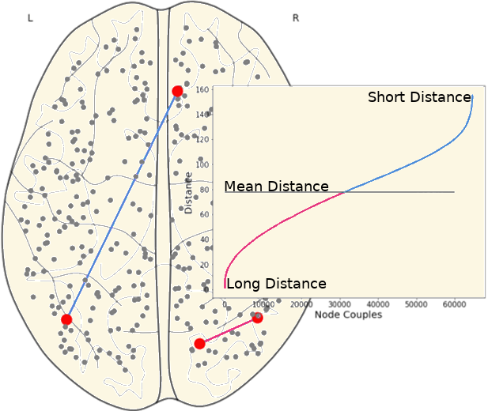
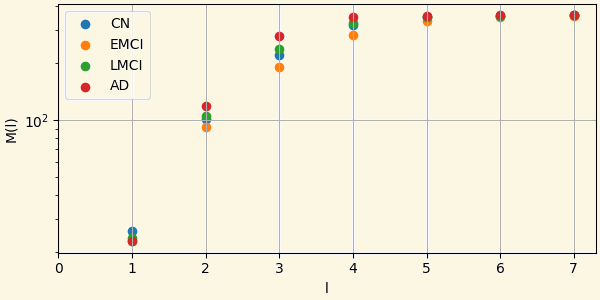
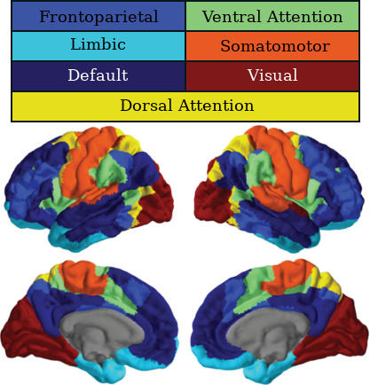

The rs-fMRI and T1w images of 92 subjects from ADNI database were analyzed in this study.
| CN | EMCI | LMCI | AD | ALL | |
|---|---|---|---|---|---|
| Sample Size | 23 08 M 15 F |
23 12 M 11 F |
23 10 M 13 F |
23 11 M 12 F |
92 41 M 51 F |
| Age (Mean±SD) |
75.82±9.44 | 75.29±6.36 | 72.26±7.05 | 77.75±3.75 | 74.78±7.11 |
Preprocessing data was done using fMRIPrep. fMRIPrep is a fMRI data preprocessing pipeline that performs basic processing steps on raw images. Including:
A selection of nuisance variables generated by fMRIPrep were regressed out of the data. These variables are:
In addition to that, the derivatives, quadratic terms, and squares of derivatives of these variables were also regressed out.
In this step, the brain were parcellated into 360 regions by the HCP-MMP parcellation. The time series corresponding to each region were computed as the mean of time series of voxels within that region.
| Visual | Somatomotor | Limbic | Default |
| DorsalAttention | VentralAttention | Frontoparietal |
where $E$ is the global efficiency, $PSW$ is the proportion of the strong weights, $N$ is the set of all nodes, $n$ is the number of nodes, $d_{ij}$ is the shortest path length between nodes $i$ and $j$, and $W$ is the set of all weights
For each network 10 local and 14 global network measures were computed:
Clustering measures the tendency of neighbors of a node to be also neighbors. 
For each subject in a group the mean network were computed as the voxel-wise mean of all subjects within that group.
Strength Clustering Betweenness Closeness
Strength Clustering Betweenness Closeness
Strength Clustering Betweenness Closeness
Strength Clustering Betweenness Closeness
The mean of the correlation coefficients of pairs of nodes that are symmetrical to each other.
Group |
Mean |
SD |
|---|---|---|
| CN | 0.708 | 0.060 |
| EMCI | 0.696 | 0.073 |
| LMCI | 0.613 | 0.148 |
| AD | 0.533 | 0.154 |
We have classified links as short and long links based on the spatial location of its nodes on the brain.
| Short Links | Long Links | |||
|---|---|---|---|---|
Group |
Mean |
SD |
Mean |
SD |
| CN | 1.128 | 1.896 | 0.441 | 1.309 |
| EMCI | 1.114 | 1.950 | 0.454 | 1.360 |
| LMCI | 1.114 | 1.915 | 0.455 | 1.340 |
| AD | 1.065 | 1.910 | 0.501 | 1.403 |
The tendency of nodes to connect to other nodes with similar degree.
Measuring Assortativity: The average nearest neighbors degree of a vertex $i_{k}$: \begin{aligned} k_{nn,i} & = \frac{1}{k_{i}}\sum_{j\in V(i)}^{}k_{j} \end{aligned} The average degree of the nearest neighbors, $k_{nn}(k)$, for vertices of degree $k$: \begin{aligned} k_{nn}(k) & = \frac{1}{N_{k}}\sum_{i/k_{i}=k}^{}k_{nn,i} \end{aligned} Where $k_{i}$ is the degree of node $i$, $V(i)$ is the set of neighbours of node $i$, and $N_{k}$ is the number of nodes with degree $k$.Group |
Pearson assortativity coefficient |
|---|---|
| CN | 0.708 |
| EMCI | 0.696 |
| LMCI | 0.613 |
| AD | 0.533 |
Group |
Slope of the fitted line |
|---|---|
| CN | 0.00723 |
| EMCI | 0.00726 |
| LMCI | 0.00729 |
| AD | -0.00080 |
A network has a small-world property if it is possible to go from one vertex to any other in the network passing through a very small number of intermediate vertices.
We have classified nodes into 7 modules based on the 7-ROI parcellation by Yeo et al., (2011).
| weights of inter-ROI links |
weights of intera-ROI links |
|||
|---|---|---|---|---|
Group |
Mean |
SD |
Mean |
SD |
| CN | 0.197 | 0.171 | 0.003 | 0.120 |
| EMCI | 0.182 | 0.155 | 0.007 | 0.107 |
| LMCI | 0.173 | 0.156 | 0.012 | 0.114 |
| AD | 0.153 | 0.166 | 0.014 | 0.128 |
Given a scoring system for nodes, network hubs are defined as nodes with score larger than the mean + the standard deviation of the scores of each node in the network.
Here we applied 3 different scores: Strength, Betweenness, and Clustering.
The network hubs are then the nodes which are hub based on one of these scores.
Group |
Number of Hubs |
|---|---|
| CN | 43 |
| EMCI | 31 |
| LMCI | 43 |
| AD | 39 |
| CN | Other Groups |
| CN | Other Groups |
| CN | Other Groups |
| EMCI |
| LMCI | AD |